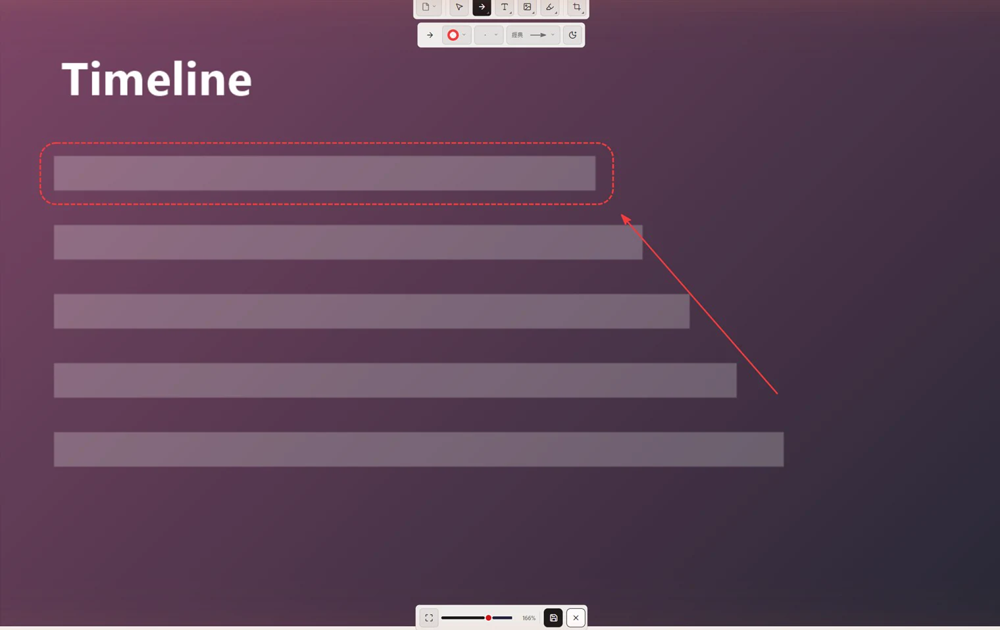
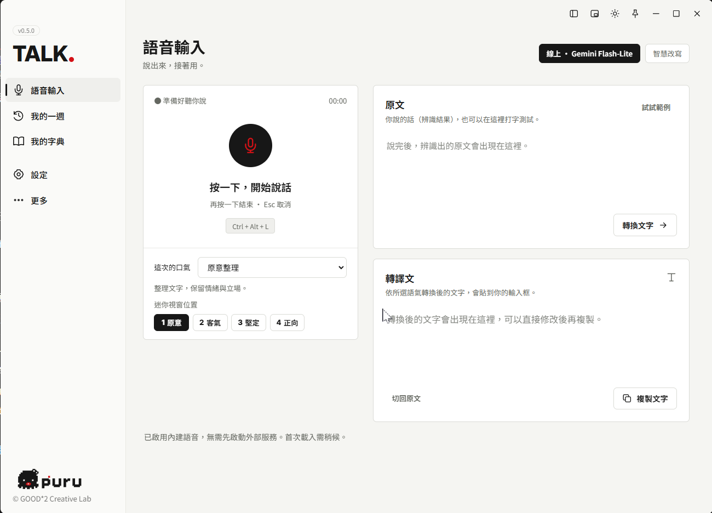
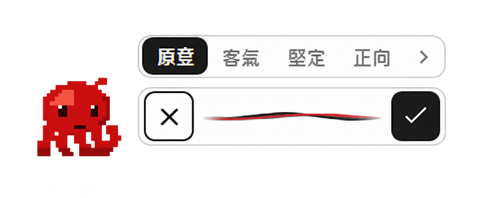
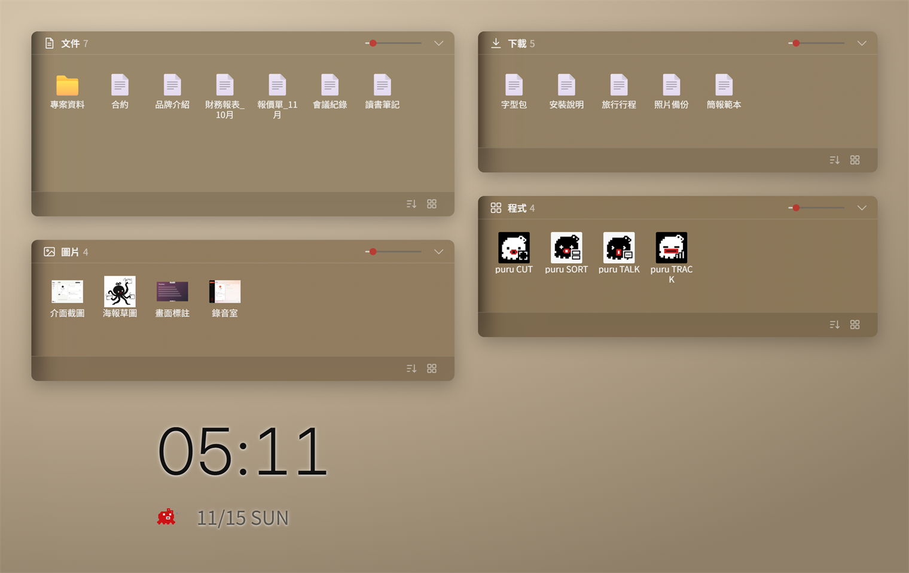
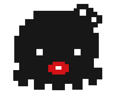

Less friction.
More flow.
把複雜留給 puru，把輕鬆留給自己。
Small desktop tools.
A little more room to think.
Four simple verbs.
A lighter workday.
puru 為日常工作做減法：一個工具只做好一件事，原本要兩三步的事，按一下就完成。
我們希望它像一位安靜的助手：不必學，打開就順手；用久了，甚至會忘了它在那裡。
看到好東西，
不只存起來。
一張畫面，說清楚當下。
一點素材，留下以後的可能。
- 截圖、錄下螢幕的一段，一個快速鍵就好
- 框線、箭頭、文字標註，重點一眼看懂
- 截圖上的字讀得出來，在電腦裡辨識、不必連網
- 素材自動分好主題，慢慢累積成筆記

只想貼給別人看的，框選時多按一下右鍵，就只複製、不存檔；想留下的才存進電腦。
看素材累積示範 →讓習慣長成知識
日常順手留下的截圖、錄影，慢慢長成一則筆記。
點選下面的素材，看它如何累積。
先留下一點素材。
從日常順手的截圖、錄影開始，不必先整理。


文字整理示範
「嗯，那個會議改明天下午三點，然後記得帶設計稿。」
先留下原本的想法。
預寫情境示範 · 不使用麥克風或 AISay it your way.
想法先說出來，文字慢慢理清楚。
讓日常溝通，少一點卡住的時刻。
- 說話就打字，連按兩下右 Shift 開始
- 自動去掉贅字，整理成段落或條列
- 換個口氣：氣話也能變得有禮貌
- 聽寫和整理都在電腦裡完成，錄音不會傳出去
整理得輕鬆，
尋找更從容。
桌面上的檔案，自動收進各自的 Sucker。
檔案不搬家，桌面先清爽。
- 依類型、檔名、日期分好，桌面出現新檔案也會自動收好
- Ctrl＋空白鍵：用檔名、文件裡的字，或一句白話找東西
- 選好按空白鍵，不打開也能先看一眼
- 和 CUT、TALK 共用小模型，圖片上的字、錄音裡的話也找得到

每個 Sucker 收什麼由你決定：類型、檔名、修改時間都能設，同一個檔案也能同時放進好幾個 Sucker。
Install it,
then forget it.
只提供安裝版。裝好之後，有新版時程式會自己提示，按一下就更新，設定與紀錄都會保留。
安裝與系統資訊
- 目前版本
- CUT · TALK · SORT
試用版（Pre-release），功能與畫面可能持續調整。 - 舊版升級
- 用 CUT 免安裝版，或 TALK 0.4.0／0.5.0 的人，請下載安裝版覆蓋安裝一次；設定與紀錄會保留。
- 作業系統
- Windows 11 64 位元（x64）：已測試。
Windows 10：尚未測試。
macOS、Linux：尚未提供。 - 建議規格
- 最低：雙核心以上處理器、8 GB 記憶體；不需要獨立顯示卡。
建議：4 核心以上、16 GB 記憶體。開啟 CUT 的內建 AI 時，需要約 5 GB 可用記憶體。
硬碟空間：CUT 約 1.3 GB、TALK 約 1.8 GB、SORT 約 0.1 GB；CUT 的內建 AI 另需下載約 3 GB。三款共用同一份模型，不重複佔空間。
依開發電腦與模擬一般筆電的實測估計，尚未在多種電腦上驗證。 - 安全性提示
- 程式目前尚未簽章，Windows 可能出現「未知的發行者」或 SmartScreen 提示。請只從本頁的按鈕下載。
More doing.
工作已經夠多了。
工具，就簡單一點。
puru 從日常工作裡的小麻煩開始。畫面怎麼說清楚、想法怎麼留下來、東西怎麼找得到、進度怎麼看得懂。
我們相信，好工具可以安靜地幫上忙。多留一點時間，給創作、給生活，也給什麼都不做的片刻。
A little good, every day. ■
今天，也輕鬆一點。
關於 puru 裡的 AI
puru 內建的是能在一般電腦上跑的小模型，擅長辨識文字、整理語句這類日常小事。它的能力有限，偶爾也會出錯，重要內容請再看一眼。
想要更聰明的流程，可以在 CUT 與 TALK 的設定裡接上你自己的 AI 模型或 agent；SORT 之後跟上。